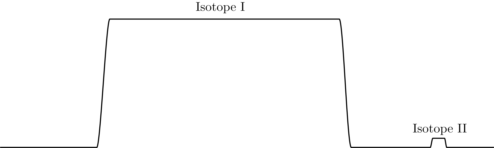

We note that:
\begin{align}
^{10}\text{B} &\sim 10.012938 \\
^{10}\text{Be} &\sim 10.01432
\end{align}
and then see that:
\begin{equation}
R = \frac{m}{\Delta m} \sim 7\times 10^{3}.
\end{equation}
Therefore, if we have an isotope system as in Fig. 1, we need a super high-resolution machine in order to resolve the second peak.

Fig. 1: Comparison of analytical isotope peaks.
Radiocarbon ($^{14}$C)
This is produced in the upper atmosphere.
There are two main production paths:
Neutron Capture: By far the most important, this is N is super abundant in the atmosphere. The equation is:
\begin{equation}
^{14}_7\text{N} + n \to ^{14}_6\text{C}+ p + e^- + \gamma^-
\end{equation}
Spallation: This is described by:
\begin{equation}
^{16}_8\text{O} + n \to ^{14}_6\text{C} + ^3_2\text{He}.
\end{equation}
In the atmosphere, what we have is:
\begin{equation}
^{14}\text{C} \to ^{14}\text{CO}_2,
\end{equation}
by oxidation.
From all of this, the natural abundance is $^{14}\text{C}\sim 1 \times 10^{-12}$.
This means, that in the modern atmosphere there is less than 1 ton of $^{14}$C is in the atmosphere.
The decay is of the form:
\begin{equation}
^{14}_6\text{C} \to ^{14}_7\text{N} + e^- + \gamma^-,
\end{equation}
which is a $\beta^-$ decay.
The half-life is $t_{1 / 2} = 5730$ [yr].
This is specifically called the ``true half-life'', because there is another half-life that is in use, known as the ``Libby Number''.
This is defined as $t_{l, 1 / 2} = 5568$ [yr].
This is the half-life is from the 1960's, but it is not exactly correct.
We can describe the decay as:
\begin{equation}
N = N_0\exp\left[-\lambda t\right],
\end{equation}
where $\lambda = \log 2 / t_{1 / 2}$ is the decay constant and $N_0$ is the initial concentration.
As we know the characteristics of this equation so well, we can use it as a dating tool. \par
The standard for $^{14}$C is oxalic acid, Ox I, synthesized in 1950.
What is really used is the activity of Ox I $\times 0.95$.
In practice, we measure:
\begin{equation}
\frac{^{14}\text{C}}{^{12}\text{C}},
\end{equation}
and then normalize to:
\begin{equation}
\frac{^{13}\text{C}}{^{12}\text{C}},
\end{equation}
where $\delta^{13}$C of $-25$ [‰]. Then, we have the equation:
\begin{equation}
A_{sn} = A_s\left(1 - 2\times \left(\frac{25 + \delta^{13}\text{C}_{ms}}{1000}\right)\right).
\end{equation}
The $2$ comes from an assumption that the 14:12 fractionation is $2\times $ 13:12 fractionation, which is an approximation but it works really well.
Notations
There are a few notations in radiocarbon literature.
The first is $F_m$, or the fraction modern. This is defined as:
\begin{equation}
F_m = \frac{A_{sn}}{A_{\text{Ox I}}} = \frac{R_{sn}}{R_{\text{OxI}}},
\end{equation}
where we have that $R = 14:13$C.
We get that $F_m \in \left[0, 1\right]$, where $F_m = 1$ is the radiocarbon is from 1950.
When $F = 0$, this is when you cannot tease a part radiocarbon from the measurement background.
This is called ``radiocarbon dead'', and occurs at about 60,000 [yr].
To get the age, we use:
\begin{equation}
^{14}\text{C}_{age} = -8033\log\left[F_m\right],
\end{equation}
which uses the Libby half-life.
Importantly, $^{14}$C $\not =$ the age of the radiocarbon.
This is because the atmosphere is constantly evolving, therefore the age is translating the age using the conditions for radiocarbon in the modern atmosphere backward in time.
Therefore, true time/calendar age needs to correct for the evolution of radiocarbon in the atmosphere.
\par
Lastly, we use:
\begin{equation}
\Delta^{14}\text{C} = \left(F_m \exp\left[-\lambda\left(t_{ms}-1950\right)\right] - 1\right) \times 1000 \:\left[‰\right],
\end{equation}
which includes a correction of decay from the measurement date to the reference point of 1950.
Usually, we have $\Delta^{14}$C $\in \left[-1000, 0\right]$, for dates pre-1950. It then belongs to $\left[0, 600\right]$.